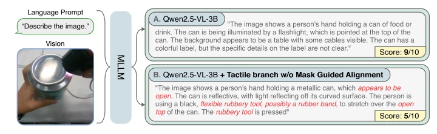
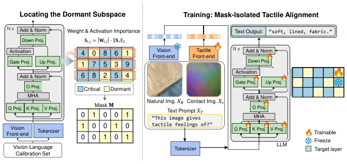
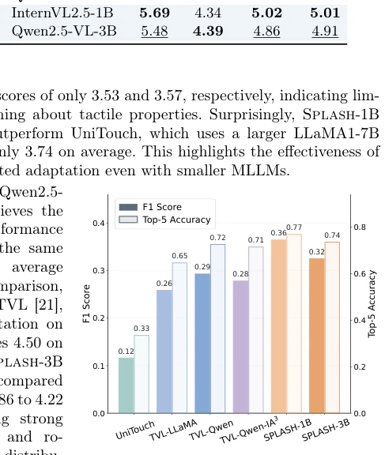
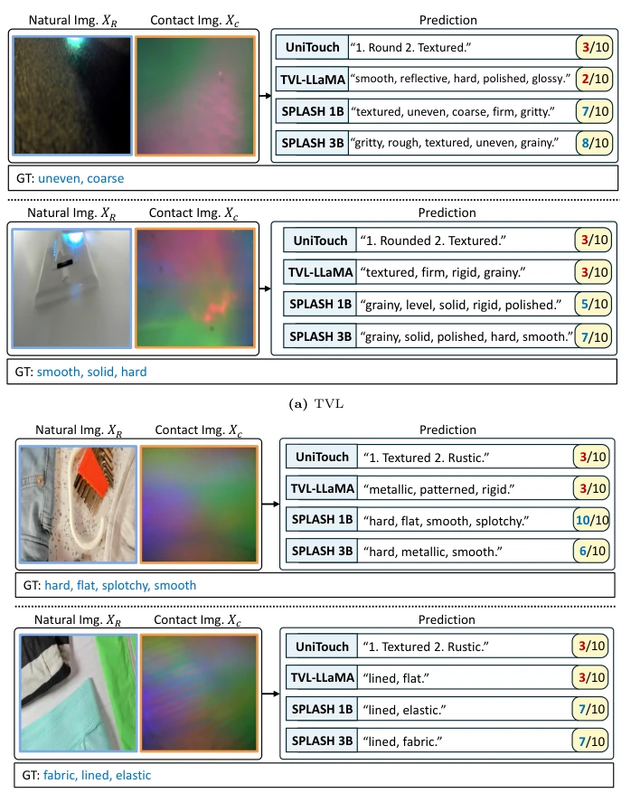
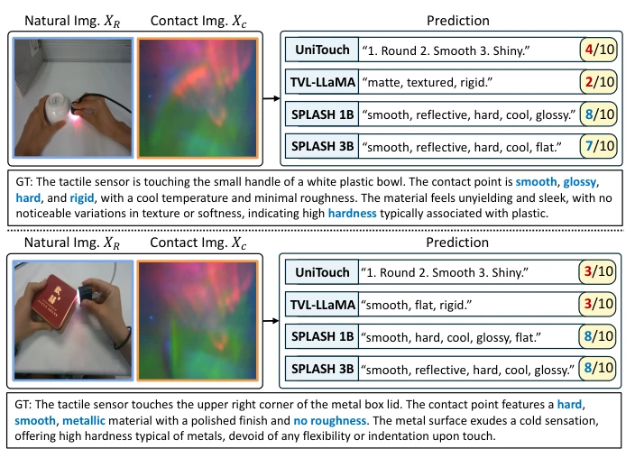

This paper attempts to forcefully integrate tactile capabilities into small-parameter multimodal large models (sMLLMs). The core challenge lies in learning tactile skills without losing the originally proficient visual-language reasoning. The Splash framework employs mask isolation, dividing model parameters into key and dormant parts, training only the dormant area, which sounds like performing minimally invasive surgery on the model. Although the authors claim to outperform the 7B baseline, whether the static mask is flexible enough in dynamic robot interaction is questionable. However, achieving tactile alignment without increasing inference overhead is indeed more pragmatic than simply stacking parameters or adding Adapters. Yet, whether this strategy of awakening dormant parameters fails under extreme distributions still depends on subsequent verification. Additionally, experiments are mainly based on DIGIT sensors, cross-sensor generalization ability is unverified, slightly conservative. Static masks cannot adapt to dynamic activation changes in long-term interaction, this is the main limitation.
Embodied intelligence requires perceiving physical attributes such as friction and hardness, relying solely on vision often cannot distinguish, tactile provides physical grounding. Existing methods such as TVL [21] and UniTouch [46] mostly rely on large models above 7B, making edge deployment difficult. If directly fine-tuned on small models, it easily triggers catastrophic forgetting, leading to visual capability degradation. As shown in Figure 1, after training with a small amount of tactile data, the model's visual description capability drops significantly, appearing visual amnesia. Although parameter-efficient fine-tuning methods like LoRA [24] can alleviate forgetting, they still face representation space conflicts in cross-modal alignment and often require multi-stage training. Existing VTL alignment methods lack high-level semantic reasoning capabilities. This paper aims to solve the zero-sum game of small models when extending senses, ensuring tactile learning does not destroy the pre-trained basic reasoning capabilities, providing an efficient solution for resource-constrained robots.

Fig. 1: Example of the catastrophic forgetting problem in tactile alignment for MLLMs (e.g., TVL [21] w/ Qwen2.5-VL-3B). A small amount of tactile training set often forgets the visual sense in the base MLLM. More failure cases in Appendix.
The Splash framework includes a tactile frontend and LLM backbone. Inputs are RGB images, tactile contact maps, and text prompts. The core innovation lies in parameter mask generation: utilizing a visual-language calibration set, calculating the product of linear layer weights and activation values as an importance score, the formula is weight norm multiplied by activation L2 norm. Dormant subspace is split out according to sparsity ratio, with the rest being key parameters. In the training phase, key parameters are frozen as stable anchors, only updating dormant parameters in the tactile frontend and LLM. This achieves single-stage unified training, without needing multi-stage alignment. Compared to LoRA's additive update, Splash avoids perturbing the original manifold through structural isolation. Tactile encoder uses ViT-Tiny, features mapped to language space. Finally, tactile description generation is optimized via autoregressive objective, ensuring tactile information is internalized without interfering with visual reasoning paths. Masks are generated in the offline phase, binary masks are applied during training to limit gradient updates. The training objective is maximizing the likelihood probability of tactile description generation, the formula involves sequence probability calculation. After mask generation, key parameter gradients are zeroed, dormant parameters update normally.

Fig. 2: The overall framework of Splash. To mitigate the catastrophic forgetting in the visual aspect, we train a dormant subspace in LLM for tactile alignment in sMLLMs. We note that the tactile front-end is also updated in a unified training stage.
Experiments are conducted on three tactile benchmarks: SSVTP, TVL, and TacQuad, using GPT-4o scoring and F1/Top-5 metrics. Simultaneously evaluate visual benchmarks such as MMMU, MathVista to verify capability retention. Baselines include TVL [21], UniTouch [46], and LoRA/(IA)3. Results show Splash-3B surpasses 7B baselines on tactile tasks, average score 4.91, while TVL-7B is only 4.31. On visual benchmarks, Splash-3B reaches 55.3 on MMMU, better than TVL-Qwen's 50.0. Ablation studies show 60% sparsity is best, too low limits tactile learning, too high causes forgetting. Calibration data amount is stable at 128 samples, even without calibration data it can work, proving the method utilizes architectural redundancy rather than overfitting. Ablation studies also tested calibration data selection, found noise data can also work.

Fig. 3: Quantitative comparison with objective metrics on SSVTP [27], TVL [21], and Tac- Quad [16]. We report the averaged F1 score and Top-5 accuracy. Splash demonstrates superior performance in both F1 and Top-5 Accuracy.

Fig. 4: Qualitative comparisons on TVL [21] and SSVTP [27]. Splash demonstrates the robustness with higher accuracy score than TVL-LLaMA7B [21] and UniTouch [46]. Especially, Splash-1B highlights the best scores in examples on SSVTP, even at the 1B-parameter scale.

Fig. 5: Qualitative comparisons on TacQuad [16]. Both Splash-1B and -3B generate more diverse predictions than baselines, achieving higher accuracy scores by an LLM judge.